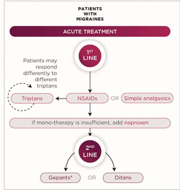

Q1. Crise de enxaqueca forte, incapacitante. Classe de escolha abortiva clássica:
Meta + checklist
Abortivo: da AINE ao triptano e além
Leve–moderada → AINE; moderada–forte → triptano; sem triptano → gepant ou lasmiditan.
Abortivo = crise
Tratamento abortivo = tratar a crise. Se está doendo, pensa-se em droga analgésica. Conhecer o arsenal evita pegadinhas de banca.
AINE leve–moderada
Analgésico comum e AINE têm utilidade sobretudo em crises leves e moderadas. Crises tipicamente são moderada–forte — cenário em que AINE costuma ser insuficiente.
Triptano como escolha
Nas crises de moderada a forte, os triptanos são a classe de escolha. Exemplos: naratriptano, sumatriptano, zolmitriptano — várias vias. São agonistas seletivos da serotonina: modulam dor; a serotonina também causa vasoconstrição, que pode ser benéfica em alguns cenários.
Gepant e lasmiditan
Antagonistas do CGRP (gepants): rimegepant, ubrogepant — CGRP = peptídeo relacionado ao gene da calcitonina, participa da dor; menos disponíveis/caros.
Lasmiditan: agonista serotoninérgico sem vasoconstrição — opção quando se evita triptano. Gepants e lasmiditan cobrem o cenário “sem triptano”; AINE em dose mais alta também pode, mas as classes novas ocupam esse espaço.

Martin VT, Feoktistov A, Solomon GD. Ann Med. 2021;53(1):1969–1980. Figure 4, recorte do painel agudo — CC BY 4.0 · DOI 10.1080/07853890.2021.1995626 · fonte
Escada de classes agudas
O workflow mostra a progressão entre classes, mas não imprime faixas de intensidade. AINE ou analgésico atende o quadro leve a moderado; triptano entra na crise mais intensa ou com resposta inadequada, conforme o contexto clínico.
Quiz
Q2. Lasmiditan difere do triptano principalmente porque: